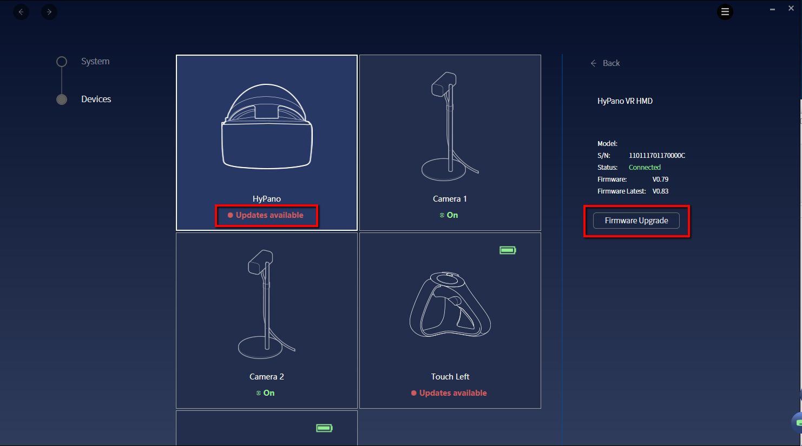
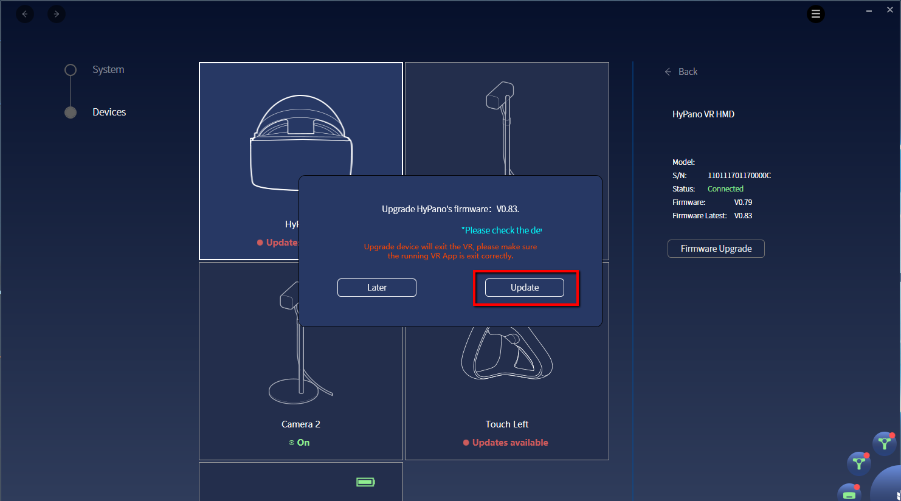
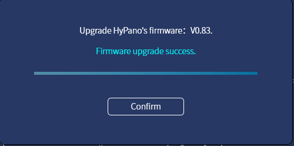

Firmware Upgrade¶
- If new firmware is available, a red dot will show on the Hypereal monitor.

- Open Devices Page of HyperealVR and choose a Updates on available device. Click Firmware Upgrade button. 
- Click the Firmware update button and a confirm dialog will pop up. 
- Click Update button to update firmware.

- Once update is done, a confirm dialog will pop up. Click Confirm button to finish the whole process. 